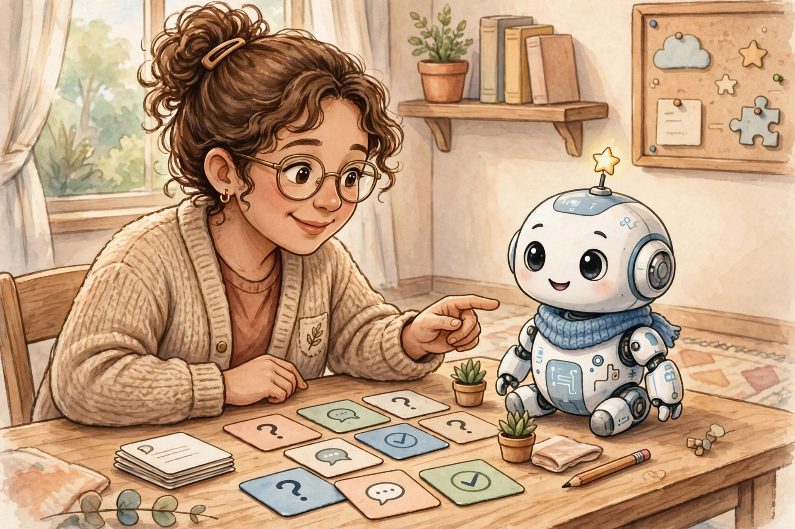

Hôm qua bạn đã biết cách đọc một model pretrained. Hôm nay ta làm bước đầu tiên của tuần 3: dạy model biết làm theo hướng dẫn — gọi là supervised fine-tuning, viết tắt là SFT. Ý cốt lõi rất đơn giản: pretrain dạy model biết ngôn ngữ, SFT dạy model biết cư xử — trả lời câu hỏi thì trả lời, viết email thì viết email, thay vì tiếp tục bịa thêm câu hỏi mới.

Ví dụ đời thường: bạn thuê một người rất giỏi văn chương nhưng chưa bao giờ làm trợ lý. Bạn nói “Viết email xin nghỉ phép”, người đó có thể viết tiếp thành… một đoạn hội thoại tưởng tượng, vì họ quen tiếp tục văn bản, chứ không quen đáp ứng yêu cầu. Base model y hệt vậy.
Thử với base model: prompt “Hỏi: Thủ đô của Việt Nam là gì? Đáp:” — base model có thể trả lời đúng, nhưng cũng có thể bịa thêm “Hỏi: Thủ đô của Pháp là gì? Đáp: Paris…” vì nó đang tiếp tục một mẫu văn bản hỏi–đáp, không phải đang trả lời bạn.
Sau SFT: cùng một câu hỏi, model trả lời gọn “Hà Nội.” rồi dừng — vì nó đã học hành vi: câu hỏi → câu trả lời, rồi kết thúc bằng token dừng.
Một mẫu SFT thường có ba phần. Instruction là yêu cầu (“Tóm tắt đoạn văn sau bằng một câu”). Input là dữ liệu kèm theo (có thể trống). Output là câu trả lời mẫu mà ta muốn model bắt chước.
{
"instruction": "Viết email xin nghỉ phép 1 ngày vì ốm",
"input": "",
"output": "Kính gửi anh/chị quản lý,\nEm xin phép nghỉ làm ngày mai vì bị ốm..."
}Nhưng model không đọc JSON — nó chỉ đọc một chuỗi token. Chat template là khuôn mẫu biến danh sách message thành chuỗi đó, chèn các special token như <|im_start|>, <|im_end|> để phân tách vai trò system / user / assistant.
Khi train, model dự đoán từng token tiếp theo và bị phạt nếu đoán sai. Nhưng trong SFT, ta chỉ phạt phần câu trả lời (assistant), còn phần prompt (system + user) thì che đi — kỹ thuật gọi là masking: gán nhãn của các token prompt bằng −100 để hàm loss bỏ qua chúng.
Vì sao phải che prompt? Thứ nhất, ta không muốn dạy model bắt chước câu hỏi của người dùng — việc đó vô ích. Thứ hai, nếu tính loss cả prompt, gradient sẽ bị pha loãng bởi những token mà lúc dùng thật model không bao giờ cần sinh ra. Code minh họa (dạng giả mã):
# prompt_ids: token của system + user # answer_ids: token của câu trả lời + token dừng input_ids = prompt_ids + answer_ids labels = [-100] * len(prompt_ids) + answer_ids # che prompt loss = model(input_ids=input_ids, labels=labels).loss
Một mẫu SFT thường chỉ dài vài trăm token, trong khi sequence train có thể dài 4096 token. Nếu mỗi sequence chỉ chứa một mẫu rồi đệm padding cho đủ dài, phần lớn công sức GPU đổ vào… các token đệm vô nghĩa. Packing ghép nhiều mẫu ngắn nối tiếp nhau cho đầy một sequence, giảm padding, tăng số token thật trên mỗi batch.
| Cách làm | Ưu điểm | Cái giá phải trả |
|---|---|---|
| Padding thường | Đơn giản, an toàn | Lãng phí compute vào token đệm |
| Packing + tách attention | Nhanh hơn, ít lãng phí | Cần attention dạng block-diagonal (mỗi mẫu chỉ nhìn chính nó) |
| Packing không tách attention | Nhanh, dễ cài | Mẫu sau “nhìn trộm” mẫu trước → học sai ngữ cảnh, cần tránh |
SFT chạy quá nhiều epoch trên một tập nhỏ sẽ cho ra model trả lời máy móc, rập khuôn đúng giọng văn của dữ liệu train — và tệ hơn, có thể quên bớt kiến thức pretrain (hiện tượng catastrophic forgetting). Dấu hiệu nhận biết: train loss cứ giảm mà val loss bắt đầu tăng; model trả lời mọi câu hỏi bằng cùng một khuôn mẫu; điểm trên các bài kiểm tra kiến thức chung tụt xuống so với trước khi SFT.
| Biện pháp | Cách làm cụ thể |
|---|---|
| Ít epoch | Thường 2–3 epoch cho SFT; epoch đầu đã tạo ra phần lớn thay đổi hành vi |
| Learning rate nhỏ | Khoảng 1e-5 đến 2e-5 cho full fine-tune model nhỏ; LR lớn phá kiến thức cũ nhanh hơn |
| Tập validation riêng | Giữ 5–10% mẫu làm val; dừng khi val loss ngừng cải thiện (early stopping) |
| Đánh giá trước–sau | Chuẩn bị 30 prompt cố định, chấm model trước và sau SFT để thấy thay đổi thật |
| Dữ liệu đa dạng | Trộn nhiều loại nhiệm vụ; đừng chỉ train một giọng văn duy nhất |
SFT là bước fine-tune rẻ nhất trong họ nhà LLM — nhưng vẫn có thể đốt điện vô ích nếu làm ẩu. Ba thói quen tiết kiệm:
Green checkpoint cho lab tối nay: đo thời gian train và số token thật / tổng số token (kể cả padding) — nếu tỉ lệ token thật thấp, hãy bật packing trước khi tăng dữ liệu.